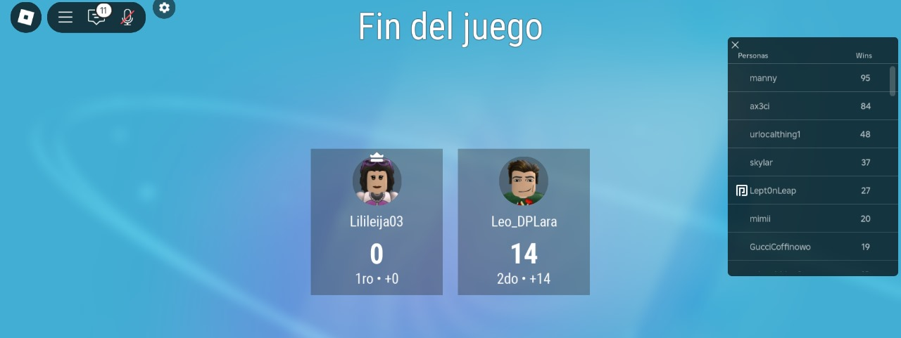
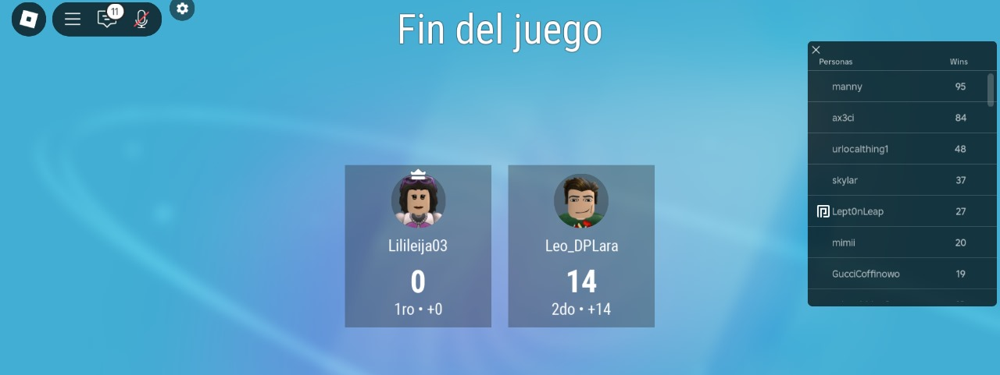
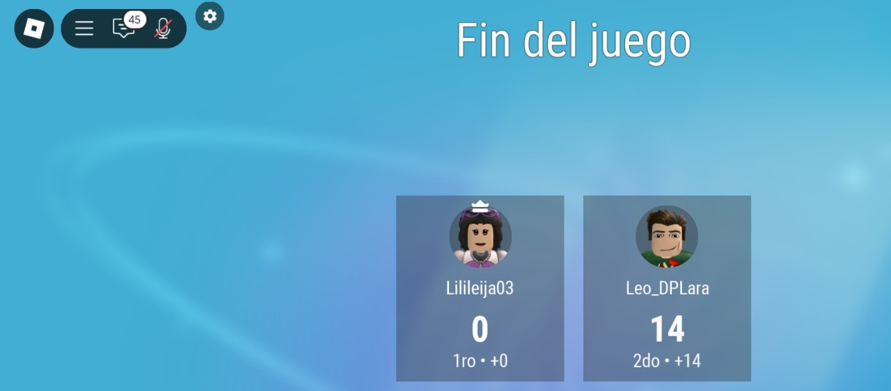
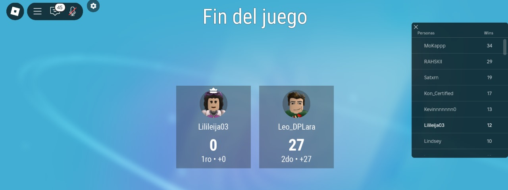
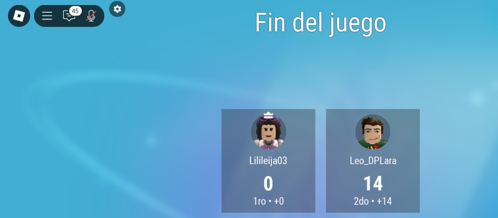
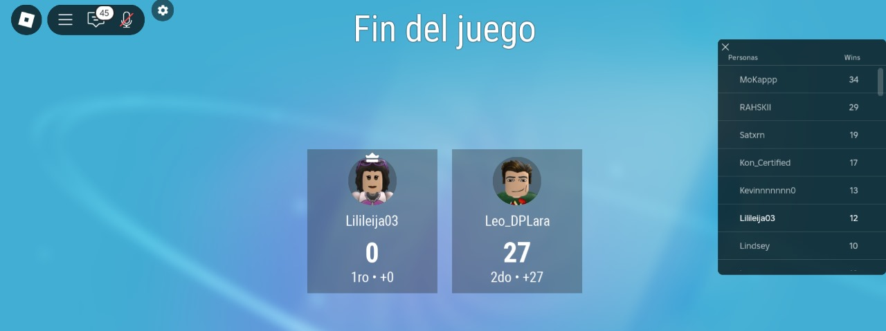

Leo y Lily
Lily, esta es mi manera de decirte que me gustas mucho. Ya no puedo esconder este sentimiento y es muy grande. Aquí solo seré Leo, contigo me siento tan bien, puedo ser yo mismo y se que nunca me vas a juzgar. Siento que nos hemos adaptado muy bien el uno al otro, me gusta que sea de esa manera. Te quiero con todo mi corazón, estás en un lugar muy importante en el y no hay día en el que no sea feliz. Eres muy especial, simplemente con el hecho de existir ya me alegraste por completo. Coincidir contigo fue lo más hermoso que me pudo haber pasado <3.
No puedo dejar de sentir una inmensa alegría por todo esto, te quiero conocer cada día y estar contigo toda una vida. Y las que siguen después de esta y mira que soy muy afortunado de que estés en mi vida mi queridísima novia.
Mira tu collage de victorias en el UNO:
 

 



19/12/2024
Nos dimos una arrastrada en el Metrobol, pero me encantó demasiado el día y todo gracias a ti. Claro que fue un día inolvidable, pues decidimos unirnos como una pareja y todo lo que conlleva algo tan bello como debe ser.
Me costó mucho decirte que me gustabas (aunque ya lo sabías) y más el pedirte que fueras mi novia. Un día que guardaré con mucho cariño en mi corazón, así como todos los días en los que tu estás y se resume desde que llegaste a mi vida.